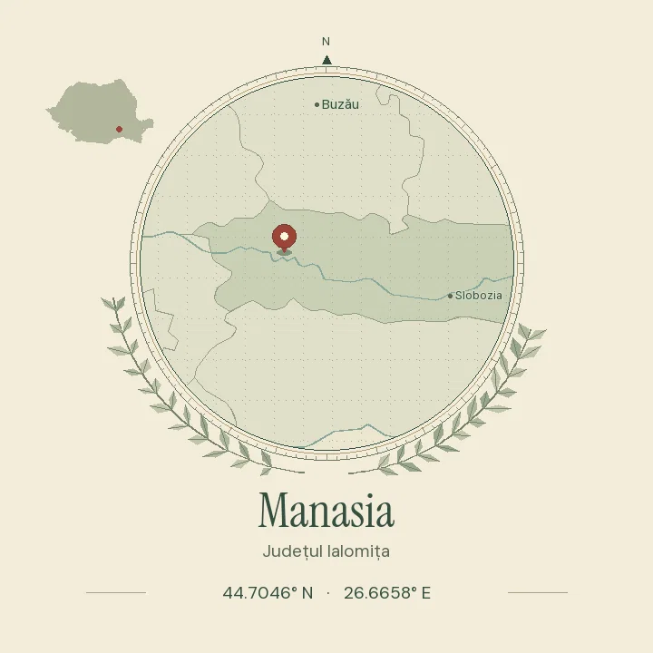
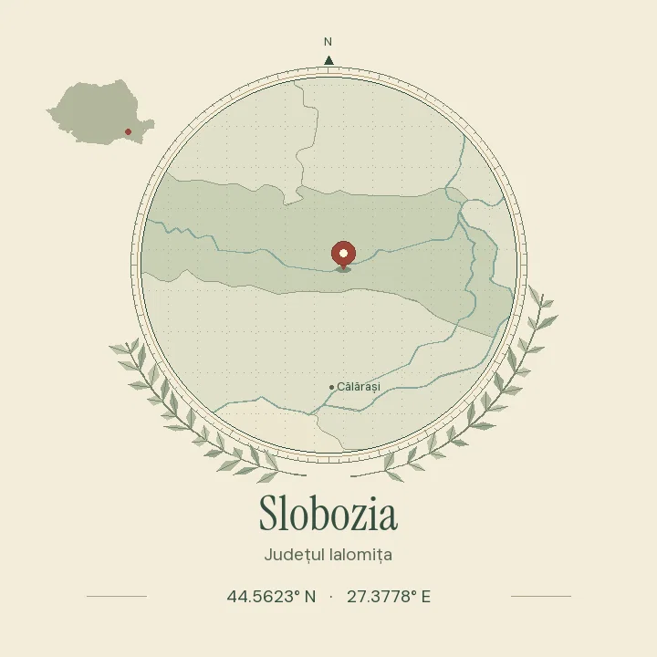
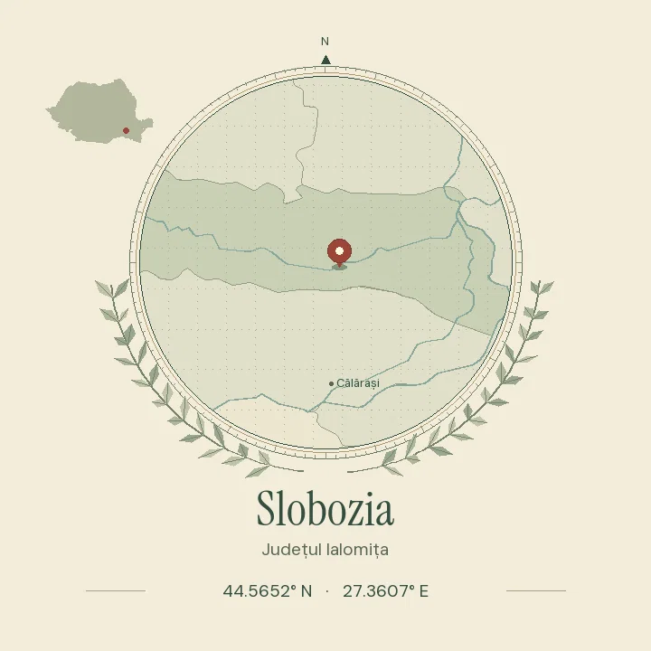
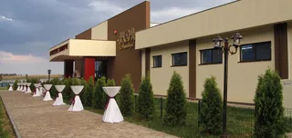

Locații de nuntă în județul Ialomița
- locații în director
- 5
- cu cazare în registrul SITUR
- 2
- medie ponderată Google
- 4,3 / 5
- evaluări Google
- 3.632
Cum alegi unde mergi la vizionare
Movilița, Slobozia, Manasia și Amara apar în această selecție. Dacă luați în calcul o petrecere sub cort, întrebați cine asigură podeaua și ce spațiu mai rămâne în jurul meselor. La Hotel Select puteți porni discuția de la oferta pentru cort consemnată în fișă.
O vizită la Slobozia poate porni de la cortul Hotel Select. Cereți să vi se arate diferența dintre spațiul acoperit de pânză și suprafața pe care pot sta efectiv mesele. Verificați și cum se ajunge de la cort la grupurile sanitare pe ploaie. Pentru un weekend în Amara, adăugați pe listă dacă invitații pot pleca direct din camere îmbrăcați pentru ceremonie.
Două adrese pentru o zi de vizionări
Pe hartă, între aceste două proprietăți sunt 5,4 km în linie dreaptă. Deschide indicațiile de drum din fișe ca să vezi traseul pe șosea înainte de a stabili a doua întâlnire.
- Hotel Ialomita Amara · Aleea teilor nr. 1, 927020 Amara
- Hotel Select · Bulevardul Chimiei 4, 920013 Slobozia
Spații exterioare menționate de operatori
- Hotel Select · Închiriere cort pentru nuntă
Explorează după localitate
Toate locațiile din județul Ialomița
Ordinea ține cont de nota Google și de numărul evaluărilor. Cum calculăm ordinea
Fotografie a locației · Sursa fotografiei Movilița · Locație pentru evenimente muzicale live
Casa Movilita EL DoD
Casă cu grădină mare pe malul lacului în Movilița, Ialomița: foișor cu grătar, cramă, piscină și bucătărie de vară. 52 de evaluări, toate de 5 stele.
Str. Caisului, 927180 Movilița+40 773 332 233
Hartă ilustrată Manasia · Reper istoric
Domeniul Manasia
La Domeniul Manasia poți avea cununia în parc și petrecerea pe terasă ori în pavilion. Descoperă saloanele conacului și întrebările pentru vizionare.
Intrarea Conacului 925300, 925300 Manasia+40 744 378 888
Hartă ilustrată Slobozia · Hotel
Console
Hotel din Slobozia cu sală modernă și ring de dans larg, lăudată de miri; recenziile despre camere și mic dejun sunt însă amestecate.
Bulevardul Matei Basarab 137, 920092 Slobozia+40 722 453 346
Hartă ilustrată Slobozia · Hotel
Hotel Select
Hotel Select, Slobozia. Spune că a folosit aerul condiționat pentru încălzire când caloriferele dintr-o cameră nu s-au încălzit.
Bulevardul Chimiei 4, 920013 Slobozia+40 740 081 183
Fotografie a locației · Sursa fotografiei Amara · Hotel
Hotel Ialomita Amara
Hotel Ialomita Amara, Amara. Un călător descrie la Ialomița Amara intrarea prin parc și așezarea complexului pe malul lacului.
Aleea teilor nr. 1, 927020 Amara+40 243 266 260
Întrebări despre locațiile din județul Ialomița
Unde pot dormi invitații în județul Ialomița?
În registrul de cazare SITUR găsim Console (34 de locuri de cazare), Hotel Select (138 de locuri de cazare). Verifică ce camere sunt libere pentru noaptea evenimentului.
Ce spații sunt documentate pentru evenimente în aer liber în județul Ialomița?
Hotel Select — Închiriere cort pentru nuntă.
Care locație din județul Ialomița are cele mai multe evaluări Google?
Hotel Select are 1.282 de evaluări în profilul Google folosit la documentare. Evaluările acoperă și alte experiențe la proprietate, inclusiv vizitele fără eveniment.
Unde apare o intrare accesibilă în județul Ialomița?
Profilurile Google indică o intrare accesibilă la Casa Movilita EL DoD, Domeniul Manasia. Pentru o cununie în exterior, cere detalii despre traseul dintre intrare și zona cu scaune.